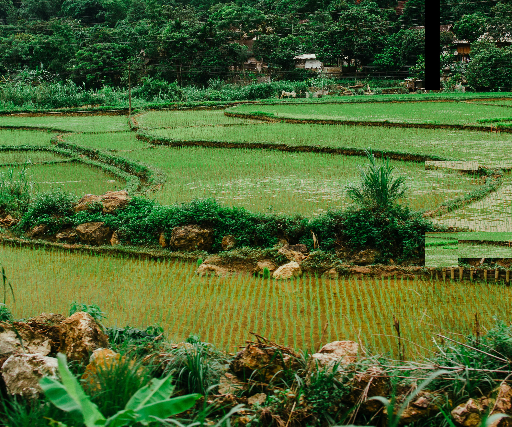
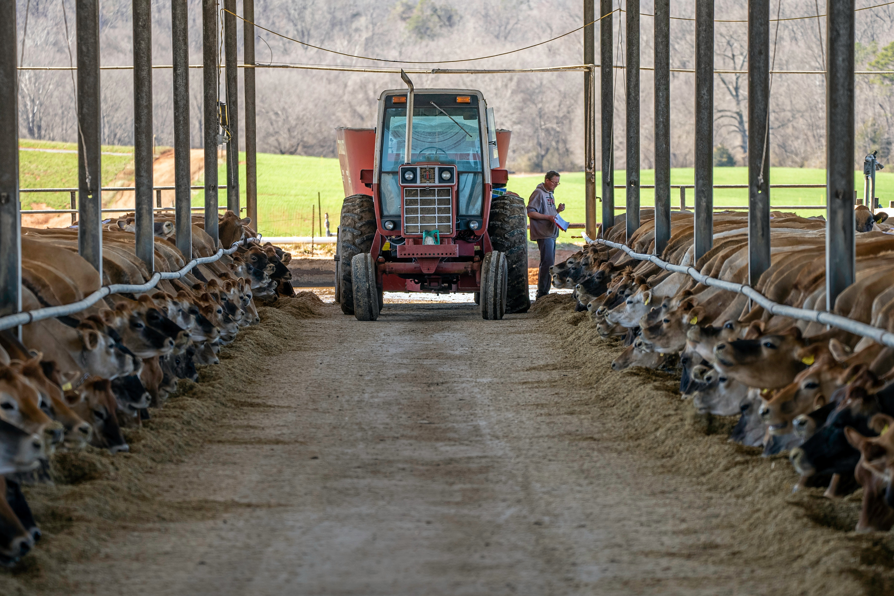
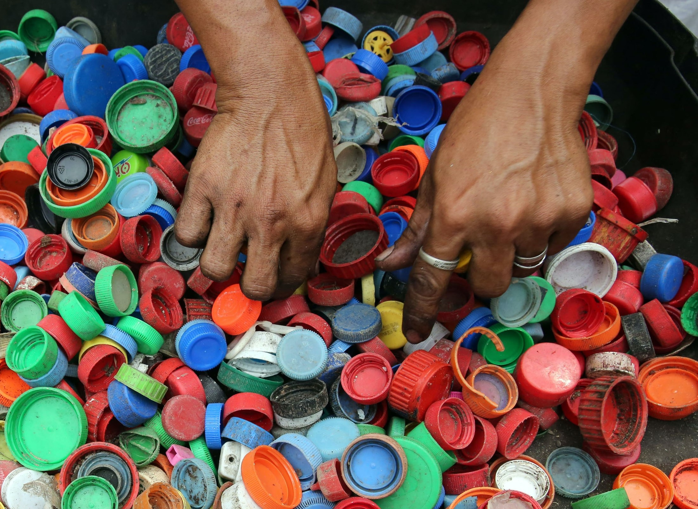

Energia eólica
Energia eólica é a energia obtida do vento. É uma das fontes de energia mais antigas exploradas pelos seres humanos e hoje é a fonte de energia renovável mais estabelecida e eficiente. O termo acadêmico para energia eólica - energia eólica - é derivado do nome da figura mitológica grega, Eolus, o guardião dos ventos.

Agricultura sustentável
"O objetivo da agricultura sustentável é atender às necessidades alimentares e têxteis da sociedade no presente sem comprometer a capacidade das gerações futuras de atender às suas próprias necessidades. Os praticantes da agricultura sustentável buscam integrar três objetivos principais em seu trabalho: um ambiente saudável, rentabilidade econômica e equidade social e econômica." O autor explora "a filosofia e as práticas que sustentam a agricultura sustentável".

Agropécuária responsável
A pecuária recebe muitas críticas, mas muitas vezes há uma falha na diferenciação entre os animais que fazem parte do problema (principalmente criados intensivamente, alimentados com grãos) e sistemas pecuários de alto bem-estar que podem ser uma parte vital da solução, restaurando ecossistemas, mantendo a fertilidade do solo, produzindo alimentos a partir de terras marginais e proporcionando importantes benefícios nutricionais.

Reciclagem
Reduz a quantidade de resíduos enviados para aterros e incineradores
Conserva recursos naturais como madeira, água e minerais
Aumenta a segurança econômica tocando uma fonte doméstica de materiais
Previne a poluição reduzindo a necessidade de coleta de novas matérias-primas
Economiza energia
Apoia a fabricação americana e conserva recursos valiosos